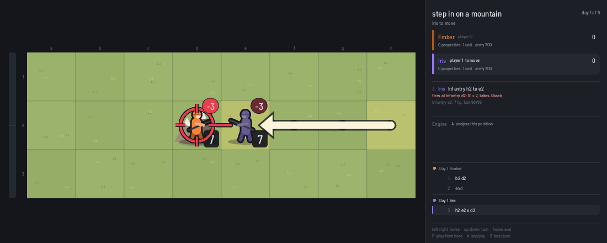
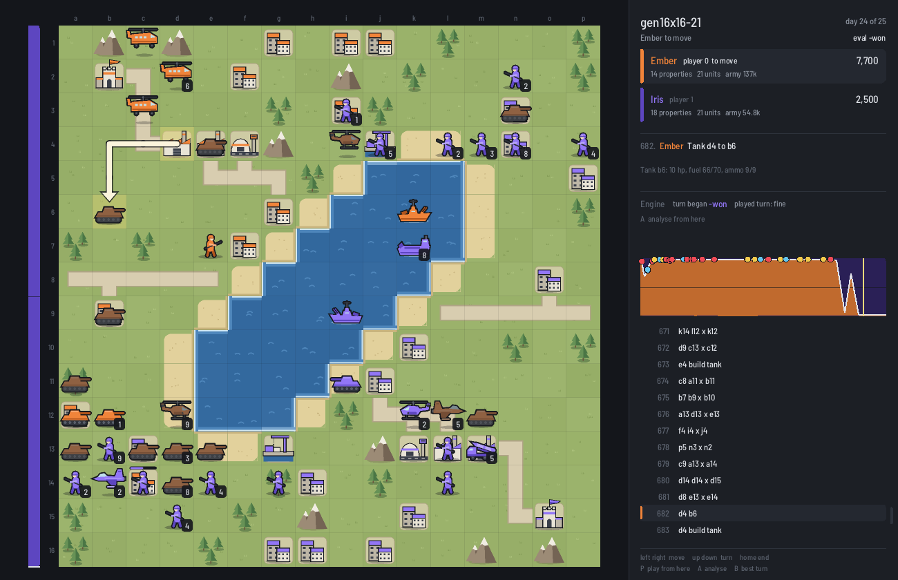

Advance Wars, by the numbers
docs/guide/build_tables.py).1. Stepping in: the rule that decides even fights
In an even fight between direct units, whoever lands the first hit usually wins. The striker hits at full strength, and the counter comes from a damaged unit. So the question that matters is: when you have to end your move inside an enemy's threat range, what are you standing on, and what is it hitting you from?
The tables below play that out exactly. Your unit steps in on the footing in the row; the enemy strikes first from the footing in the column; then both trade blows where they stand until one dies (ammo counted, own cities heal 2 a turn). Each cell gives the result for the side that stepped in, and the hit points of both after the first exchange.
Same-type fights: infantry, mech, tank, md tank, neotank
All five do the same base damage (55) to their own kind, so they share one table. Shown here for tanks; infantry and mechs also have mountains, which act like cities.
| steps in on ↓ / strikes from → | road | plain | wood | city | own city |
|---|---|---|---|---|---|
| road | loss 5 v 8 |
loss 5 v 8 |
loss 5 v 8 |
loss 5 v 9 |
loss 5 v 9 |
| plain | loss 6 v 7 |
loss 6 v 8 |
loss 6 v 8 |
loss 6 v 8 |
loss 6 v 8 |
| wood | loss 6 v 7 |
loss 6 v 8 |
loss 6 v 8 |
loss 6 v 8 |
loss 6 v 8 |
| city | win, 4 left 7 v 7 |
win, 3 left 7 v 7 |
win, 2 left 7 v 7 |
loss 7 v 8 |
loss 7 v 8 |
| own city | win, 7 left 7 v 7 |
win, 7 left 7 v 7 |
win, 6 left 7 v 7 |
win, 7 left 7 v 8 |
win, 7 left 7 v 8 |

Weaker hitters: the thresholds move
Recons (35 against each other) and anti-air (45) hit for less, so the boundaries fall differently.
| steps in on ↓ / strikes from → | road | plain | wood | city | own city |
|---|---|---|---|---|---|
| road | loss 7 v 8 |
loss 7 v 8 |
loss 7 v 9 |
loss 7 v 9 |
loss 7 v 9 |
| plain | loss 7 v 8 |
loss 7 v 8 |
loss 7 v 9 |
loss 7 v 9 |
loss 7 v 9 |
| wood | win, 4 left 8 v 8 |
win, 4 left 8 v 8 |
loss 8 v 8 |
loss 8 v 9 |
loss 8 v 9 |
| city | win, 5 left 8 v 8 |
win, 4 left 8 v 8 |
win, 3 left 8 v 8 |
loss 8 v 9 |
loss 8 v 9 |
| own city | win, 10 left 8 v 8 |
win, 10 left 8 v 8 |
win, 10 left 8 v 8 |
win, 9 left 8 v 9 |
win, 9 left 8 v 9 |
| steps in on ↓ / strikes from → | road | plain | wood | city | own city |
|---|---|---|---|---|---|
| road | loss 6 v 8 |
loss 6 v 8 |
loss 6 v 8 |
loss 6 v 9 |
loss 6 v 9 |
| plain | loss 6 v 8 |
loss 6 v 8 |
loss 6 v 8 |
loss 6 v 9 |
loss 6 v 9 |
| wood | win, 3 left 7 v 7 |
loss 7 v 8 |
loss 7 v 8 |
loss 7 v 8 |
loss 7 v 8 |
| city | win, 5 left 7 v 7 |
win, 3 left 7 v 8 |
win, 2 left 7 v 8 |
loss 7 v 8 |
loss 7 v 8 |
| own city | win, 7 left 7 v 7 |
win, 9 left 7 v 8 |
win, 8 left 7 v 8 |
win, 8 left 7 v 8 |
win, 7 left 7 v 8 |
2. Who can walk into whose range
The least footing a unit needs to step into another unit's threat range and still win the fight, with the enemy striking first. "Anywhere" means even a road is fine; "never" means it loses even on its own city.
Enemy strikes from plains
| steps in ↓ / strikes first → | Infantry | Mech | Recon | Tank | Md.Tank | Neotank | Anti-Air | B-Copter |
|---|---|---|---|---|---|---|---|---|
| Infantry | city | own city | never | never | never | never | never | never |
| Mech | anywhere | city | city | own city | never | never | never | never |
| Recon | anywhere | own city | wood | never | never | never | never | never |
| Tank | anywhere | plain | anywhere | city | never | never | anywhere | never |
| Md.Tank | anywhere | anywhere | anywhere | anywhere | city | never | anywhere | city |
| Neotank | anywhere | anywhere | anywhere | anywhere | anywhere | city | anywhere | anywhere |
| Anti-Air | anywhere | plain | anywhere | never | never | never | city | anywhere |
| B-Copter | anywhere | anywhere | anywhere | anywhere | anywhere | never | never | never |
Enemy strikes from a city
| steps in ↓ / strikes first → | Infantry | Mech | Recon | Tank | Md.Tank | Neotank | Anti-Air | B-Copter |
|---|---|---|---|---|---|---|---|---|
| Infantry | own city | never | never | never | never | never | never | never |
| Mech | wood | own city | city | own city | never | never | never | never |
| Recon | anywhere | never | own city | never | never | never | never | never |
| Tank | anywhere | plain | anywhere | own city | never | never | anywhere | never |
| Md.Tank | anywhere | anywhere | anywhere | anywhere | own city | never | anywhere | city |
| Neotank | anywhere | anywhere | anywhere | anywhere | anywhere | own city | anywhere | anywhere |
| Anti-Air | anywhere | plain | anywhere | never | never | never | own city | anywhere |
| B-Copter | anywhere | anywhere | anywhere | anywhere | never | never | never | never |
3. What this means for maps
Footing at the front decides who can advance. From the tables:
- A front of woods doesn't help equal armies. Forests read as cover, but for 55-damage fights they're plains. A no-man's land of woods plays like an open field.
- Cities and mountains at the edge of threat range are where advances happen. The side that reaches 3-star tiles just inside the enemy's threat range, facing 2-star or worse tiles, can step in. Place them to decide which side that is.
- Roads into the enemy are bad for the side using them. 0 stars means being hit to 5 instead of 6.
- Cities near the front belong to whoever owns them twice: income, and an unbeatable spot for equal units. Contested cities are the real objectives, not because of the 1000 a day.
- Map balance can be checked with these tables: for each side, list the 3-star tiles inside the enemy's threat range facing 2-star or worse tiles. If one side has more, it has more places to advance.
4. The standoff
If neither side can step in safely, nobody should step in, and passing is always legal. The exact solver confirms it on small boards: infantry against infantry, tank against tank, on empty 4x4 and 5x5 maps, are draws with perfect play. On 3x3, where the first player can hit on turn one, the first player wins. Something to take changes it: with a city in the middle, or HQs in reach, the first player wins.
So in no-fog AW combat alone doesn't force a decision. Equal armies on bad footing wait, and the game is moved by income, captures and the clock. Ranges longer than the enemy's threat range break it locally: rockets fire at 5, outside an infantry's 4.
5. Tempo, value and the clock
Moving first is worth about 3000 funds
Same engine on both sides, symmetric 12x12 maps, one base each. The second player needed about 3000 extra starting funds to break even (0: first player 20-8; +2000: 18-10; +3000: 31-25; +4000: 10-18). It's the same effect at the start: the first capture of every contested city and the first strike of every fight the first player chooses.
What units are worth to a strong player
The engine tunes how much each unit is worth, as a share of its cost, by playing itself and keeping what wins: infantry 198%, tank 139%, anti-air 107%, mech 104%, neotank 96%, artillery 90%, recon 85%, rockets 81%, md tank 73%. Tuned on generated 9x9-18x18 maps at short time controls; it measures value to this engine's play. Read next to section 2, an md tank wins every fight against a tank, but two tanks cost less and fight in two places.
Material doesn't win on a clock

6. What we don't know yet
Most of what's above is fight arithmetic: exact, but local. The engine isn't strong enough yet for its whole-game choices (build orders, when to push, where to fight) to count as discoveries. Those are next:
- Mining engine games: what winners do differently. How often they step in on bad footing, how they use front cities, when they switch from infantry to tanks.
- Fog: you can only attack what you can see, and infantry see 2 while threatening 4. Fog should make stepping in good again, and turn vision into the resource the standoff is about now. To be solved on small boards.
- Indirects: exact solves of infantry plus artillery against two infantry, rockets against infantry, and a city between two defended lines.
- No day limit: HQ and rout as the only endings; retune and see what changes.
- Bigger duels: fights of two or three units a side, where who attacks in what order matters.
7. What's wrong with no-fog AW
Measured where marked; the rest is opinion.
- It rewards waiting (measured on small boards, section 4). Combat alone doesn't force a decision; the economy and the clock do.
- The first move is worth a lot (measured, about 3000 funds on small maps).
- Most terrain doesn't matter in even fights (measured, section 1). Woods and plains play the same for the most common fights; the 2-star tile is largely decoration.
- Games get decided by counting (opinion; most engine games here end on the day limit). A property tiebreak cuts a game off, it doesn't settle it.
- With no luck every exchange is known in advance (opinion). Good for analysis, but many fights are decided before they start.
Made with shoal, github.com/wegfawefgawefg/shoal. Pictures:
python3 docs/guide/render.py. Tables: python3 docs/guide/build_tables.py.